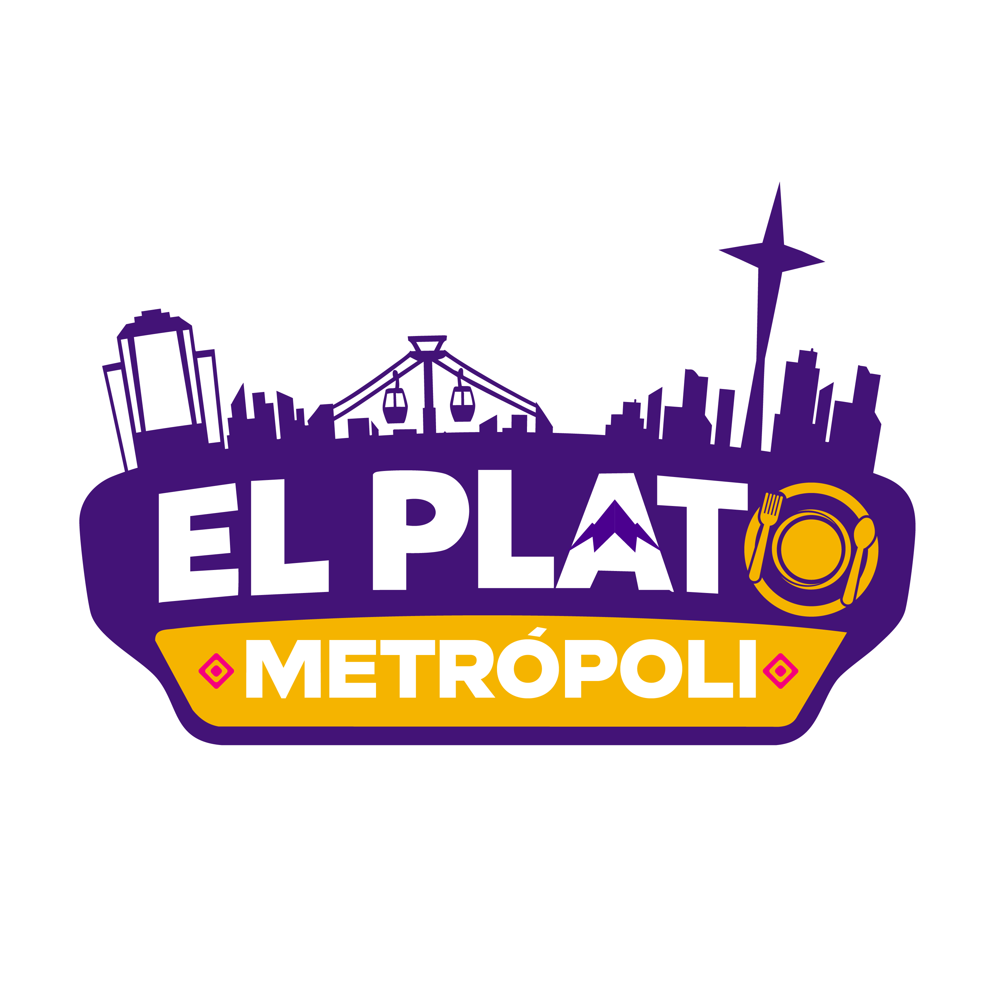

Posiciones en Tiempo Real
El conteo oficial se actualiza de manera instantánea con cada voto ciudadano

Haz clic en Me Gusta para apoyar a tu plato preferido y definir la identidad gastronómica alteña.
El conteo oficial se actualiza de manera instantánea con cada voto ciudadano